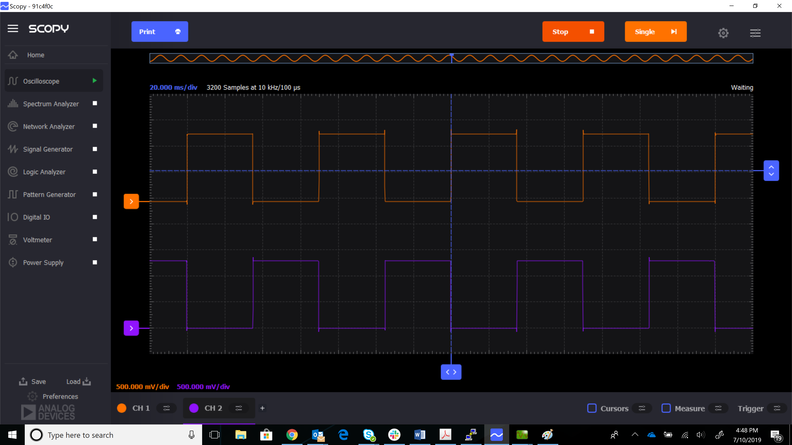

Controlling External Devices
While this was requested to better understand how to control external power amplifiers for various software to implement push to talk (PTT), and ensure the PA was off during the Rx portion, this is good practice for any application which is just doing Rx or just doing Tx for best performance. Even you you are not concerned about controlling external devices, this may be a good read for some (just skip the GPO discussions).
There are two ways to implement General Purpose Output (GPO), Automatically (the easy way), or Software Controlled (which is handled later).
Background
The AD9363 transceiver inside the ADALM-PLUTO includes an Enable State Machine (ENSM) that allows real time control over the current state of the device. The device can be placed in several different states during normal operation, including:
Wait — power save, synthesizers disabled
Sleep — wait with all clocks and the BB PLL disabled
Time Division Duplex (TDD) Tx — Tx signal chain enabled (Rx signal chain powered down)
Time Division Duplex (TDD) Rx — Rx signal chain enabled (Tx signal chain powered down)
Frequency Division Duplex (FDD) — Tx and Rx signal chains enabled, where both Tx and Rx can be used simultaneously at different frequencies.
Alert — synthesizers enabled
In this document, we will mainly focus on the Frequency Division Duplex (FDD) mode and the Time Division Duplex (TDD) Tx & Rx modes.
While the default settings are FDD mode (where Tx and Rx signal chains are always enabled), there are many use cases where TDD (Time Division Duplex) mode is beneficial. The ENSM has two control modes (1) SPI control and (2) pin control. If the TDD is a slotted system, where μsecond timing requirements must be met, pin control from a FPGA based state machine is normally used. When the TDD system is random, or push to talk, SPI control is possible. In SPI control mode, the ENSM is controlled asynchronously by writing to SPI registers to advance the current state to the next state. SPI control is considered asynchronous to the device or sample clock because the SPI clock can be derived from a different clock reference and can still function properly. The SPI control ENSM mode is recommended when real-time control of the synthesizers is not necessary.
The AD9363 also include 4 GPO_[0:3] General-Purpose Output pins. These are
general-purpose logic output pins. These pins are designed to control other
peripheral devices such as regulators/switches via the SPI bus, or they function
as slaves for the internal AD9363 state machine. They can be configured to
assert when the the Rx or Tx is active.
More information about the AD9363 can be found on the product page.
ADALM-PLUTO implementation
VDD_GPO
The power connected to the VDD_GPO pin is 1.3 V The output voltage on the
GPO_[0:3] pins is expected to be VDD_GPO × 0.8 (1.04 V) and VDD_GPO
(1.30 V). With an output current of 10 mA (typical). The off resistance of the
GPO pins is 15 Ω. The on resistance of the GPO pins is 32 Ω. If you connect
regulators or switches, it may need to be level shifted/have the drive strength
increased to achieve the proper voltage control thresholds.
With the 1.3 V VDD_GPO net, it is known/understood that the AUX_ADC and
AUX_DAC will not be functional.
Pinout
The schematic connects the GPO_[0:3] pins to GPO[0:3]
nets and test points.
{kind=link}
Just connect these GPO[0:3] pins to whatever you need to control.
Software
There is a setup portion (if you are unsure of what these attributes do, check out the documentation [1] :
set up the part in TDD mode (
0is TDD mode,1is FDD mode):~$
iio_attr -a -D ad9361-phy adi,frequency-division-duplex-mode-enable 0
set up
GPO_0to assert when in Tx mode~$
iio_attr -a -D ad9361-phy adi,gpo0-slave-tx-enable 1
write the new configuration to the part
~$
iio_attr -a -D ad9361-phy initialize 1
Verify the setup is in TDD mode, by checking the ensm_mode_available
attribute, and making sure it includes rx and tx and not fdd.
~$
iio_attr -a -d ad9361-phy ensm_mode_available
dev 'ad9361-phy', attr 'ensm_mode_available', value :'sleep wait alert rx tx pinctrl'
Then there is a run time configuration that is needed.
To set the part into Receive only mode:
~$
iio_attr -a -d ad9361-phy ensm_mode rx
To set the part into Tx only mode:
~$
iio_attr -a -d ad9361-phy ensm_mode tx
When you change from Rx mode to Tx mode, any of the four pins will assert/de-assert.
Important
It should be noted that trying to capture a buffer (ie Rx) while in Tx mode will pause/hang until timed out. And sending a buffer (Tx) while in Rx mode will also pause/hang. Cancelling things will return.
There is a short bash script that shows how to use pin control from userspace: test_ensm_pinctrl.sh
Test Results
A small script on the Pluto SDR (or host) will demonstrate:
#!/bin/sh
# Setup : Put into TDD mode, and setup GPO0 and GPO1
iio_attr -q -a -D ad9361-phy adi,frequency-division-duplex-mode-enable 0
iio_attr -q -a -D ad9361-phy adi,gpo0-slave-rx-enable 1
iio_attr -q -a -D ad9361-phy adi,gpo1-slave-tx-enable 1
iio_attr -q -a -D ad9361-phy initialize 1
while [ 1 ] ; do
iio_attr -q -a -d ad9361-phy ensm_mode rx
# capture buffer
iio_attr -q -a -d ad9361-phy ensm_mode tx
# transmit buffer
done
by placing a scope on the GPO0 and GPO1 pins, you can see the levels switch, as the Pluto transitions between Receive and Transmit.
{kind=link}
Tip
While this shows the Rx/Tx switching in 30-35ms or so, this is based on software control over SPI, running in an interpreted bash shell. Doing things in a C application, would make things faster, and doing things via pin control (via a state machine in the FPGA) can make things sub ~30 μs between Rx and Tx swaps to handle slotted specifications like LTE. IF you need things to go faster - just ask.
OK, someone asked for the C code - it’s pretty trivial, just longer. You will need to change the uri, and put in proper error checking.
#include <stdio.h>
#include <iio.h>
#include <unistd.h>
#include <stdio.h>
#include <signal.h>
volatile sig_atomic_t stop = 0;
void inthand(int signum) {
stop = 1;
}
int main(int argc, char argv)
{
struct iio_context ctx;
struct iio_device dev;
struct iio_channel ch;
const char val_str;
ssize_t ret = 0;
char buf[256];
signal(SIGINT, inthand);
/ Create IIO Context /
ctx = iio_create_context_from_uri("usb:1.3.5");
/ Find IIO device in current context /
dev = iio_context_find_device(ctx, "ad9361-phy");
/ Write into the IIO debug attributes /
iio_device_debug_attr_write_bool(dev, "adi,frequency-division-duplex-mode-enable", 0);
iio_device_debug_attr_write_bool(dev, "adi,gpo0-slave-rx-enable", 1);
iio_device_debug_attr_write_bool(dev, "adi,gpo1-slave-tx-enable", 1);
iio_device_debug_attr_write_bool(dev, "initialize", 1);
while (!stop) {
ret++;
iio_device_attr_write(dev, "ensm_mode", "rx");
iio_device_attr_write(dev, "ensm_mode", "tx");
}
iio_context_destroy(ctx);
printf("iteration = %li\n", ret);
return EXIT_SUCCESS;
}
Over USB, you get:
time ./foo
^Citteration = 2693
real 0m5.283s
or about 0.980876346 ms per Rx/Tx slot.
Platform |
transport |
Infrastructure |
Timing |
|---|---|---|---|
host |
USB |
shell |
80ms |
host |
USB |
C code |
0.6 to 1.3 ms |
pluto |
local |
shell |
30-35ms |
pluto |
local |
C Code |
0.2 to 0.6 ms |
Again, these are representative numbers for software control, faster is possible with pin control.
Testing in IIO Oscilloscope
The Advanced Tab indicates how to control these in the IIO oscilloscope.